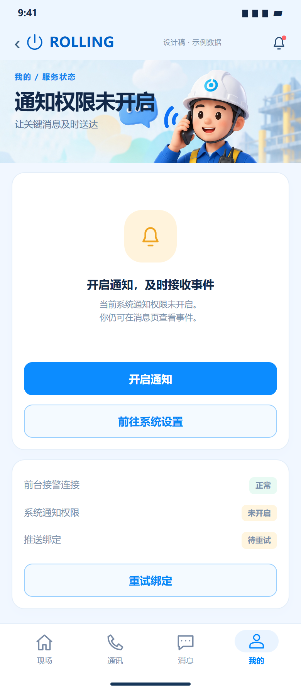
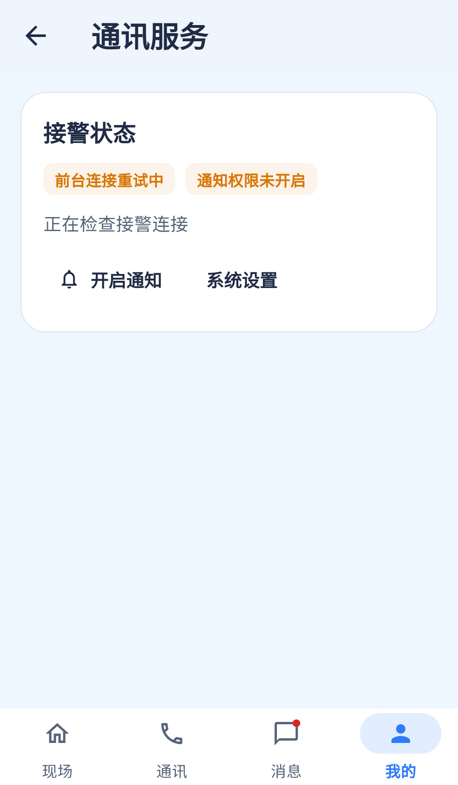

拒绝权限场景存在；需要补提示层级、真实配置状态与返回刷新。
相同 · 已有基础
权限未开启、开启通知、系统设置与条件性重试绑定已有。
不同 · UI与场景
当前复用通讯服务的小状态卡，无设计大提示图和“不影响消息页查看”说明；当前截图绑定按钮隐藏是配置条件。
01 / 先看 UI
两图显示宽度统一；设计390px与当前360逻辑宽的画布不同。各图可独立滚动到底，点击“原图”放大。


使用既有组件截图；业务数据为示例。
02 / 逐项核对功能与小交互
入口：通讯服务 → 通知权限状态 · 当前形态：状态
| 编号 | 部位 | 设计要求 | 当前UI | 功能结论 | 下一步 |
|---|---|---|---|---|---|
| 37-01 | 状态归属 | 通知权限未开启 | 当前33同页的权限分支 | 已有代码 | 不要新增独立业务路由 |
| 37-02 | 提示 | 开启通知及时接收事件、仍可消息页查看 | 当前badge和综合状态，没有完整说明卡 | 部分：缺清晰降级说明 | 补大提示但不误称彻底无法使用 |
| 37-03 | 开启 | 申请系统权限 | 按钮已有 | 已有代码：Permission.notification.request | 验允许、拒绝、永久拒绝 |
| 37-04 | 前往设置 | 进入通知权限设置 | 当前应用设置入口 | 部分：不一定直达通知设置 | 名称准确，返回主动读真实权限 |
| 37-05 | 前台连接 | 即使未授权仍显示连接状态 | 当前单独badge | 已有代码 | 保留WS与系统推送区别 |
| 37-06 | 绑定重试 | 待重试状态与按钮 | 仅configured且未registered显示按钮 | 已有代码：条件显示，不是永久缺失 | 配置缺失说明原因；已绑定不必一直重试 |
| 37-07 | 成功刷新 | 允许后更新状态 | 生命周期刷新权限有代码 | 已有代码，真实系统待验 | 从设置返回验badge、绑定与到达状态 |
| 37-08 | 底部 | 仍可去消息页 | 当前四栏存在 | 已有代码 | 保留导航，避免强制授权阻断应用 |
源码依据
mine_page.dart:739,778；notifications.dart:248,257,520
链接为随报告保存的带行号快照；行号对应分析时源码。以函数和字段共同定位，不能将请求代码视为执行成功证据。